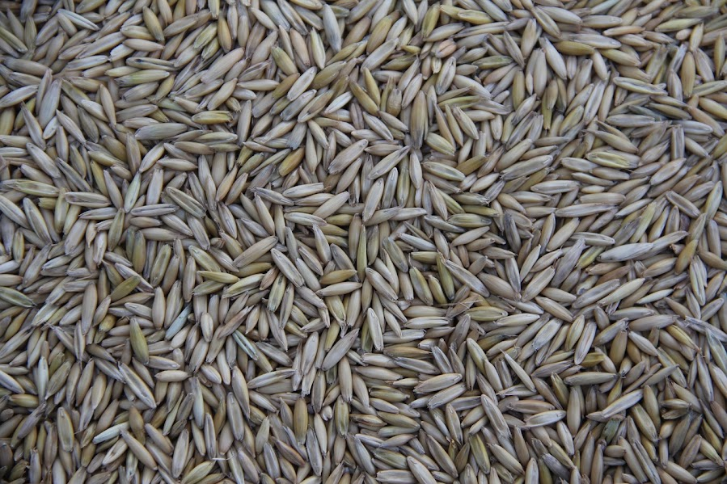

SilosTech: Inovação e Segurança para sua Colheita
Soluções integradas para armazenagem de grãos
Conheça Nossos ProdutosSobre Nós
Líderes no mercado de silos agrícolas com tecnologia de ponta e compromisso com a qualidade.
Nossos Produtos
Silos Metálicos
Silos metálicos de alta resistência, ideais para armazenagem segura e eficiente de diversos tipos de grãos. Tecnologia avançada para conservação da qualidade do produto
Silos de Concreto
Silos de concreto robustos e duráveis, projetados para grandes capacidades de armazenagem. Soluções personalizadas para atender às necessidades específicas de cada cliente.
Silos Elevados
Silos elevados que facilitam o carregamento e descarregamento de grãos, otimizando a logística e o fluxo de trabalho na propriedade. Estruturas seguras e eficientes
